Jangan menunggu seseorang untuk membawakan bunga. Tanami sendiri tamanmu dan hiaslah jiwamu.
BUNGA
BUNGA – Hampir sebagian besar wanita suka dengan hal yang satu ini. Dalam setiap perayaan seperti pernikahan, ulang tahun, anniversary, bahkan belasungkawa sekalipun, bunga memiliki peranan penting. Rasanya hampir tak bisa dibayangkan bila sebuah pesta pernikahan tanpa bunga sedikitpun. Keindahan bentuk, warna, serta aroma bunga yang begitu kaya jenisnya telah menjadi inspirasi selama berabad-abad untuk memenuhi kebutuhan dasar manusia seperti parfum, sabun, pembersih, dan berbagai produk lainnya. Demikian pula dalam sebuah hubungan, bunga dapat dikatakan sebagai lambang apresiasi tentang cinta, ketulusan, persahabatan, sukacita, dan lainnya. Bagi para pria, memberikan bunga kepada kekasih atau istri bahkan untuk ibu, pasti akan meninggalkan kesan mendalam di hati bahwa mereka dikasihi. Ini adalah sebuah bentuk pernyataan kasih yang indah dan menyentuh.
Simbol
Bunga Mawar Merah
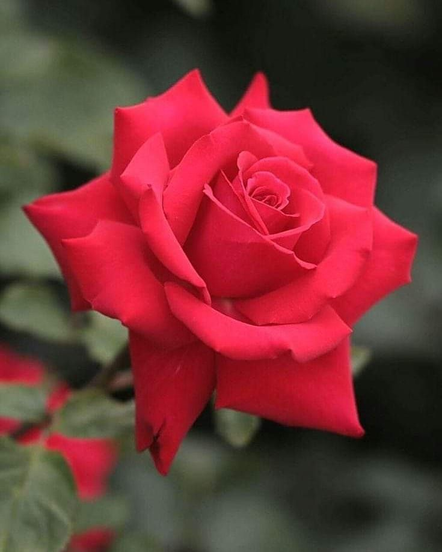
Bunga mawar merah adalah simbol dari keromantisan. Warna merah sendiri menggambarkan keberanian dan memiliki keinginan kuat untuk menjaga pasangannya. Anda juga dapat menggunakan rangkaian bunga mawar merah untuk menyatakan “I love you” pada momen romantis Anda.
Bunga Mawar Pink
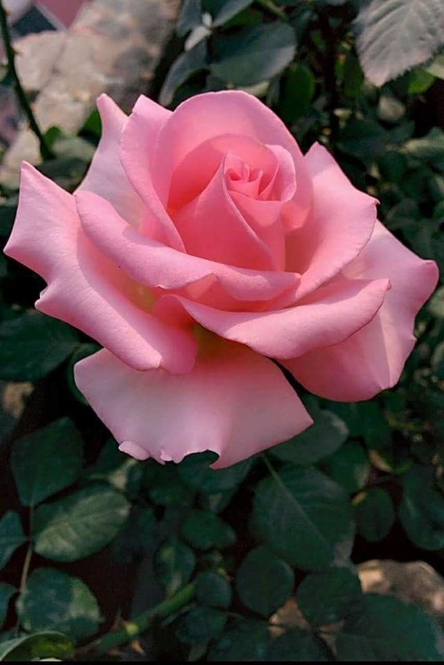
Bunga mawar merah muda atau biasa kita sebut dengan warna pink melambangkan cinta yang manis, kebahagiaan, dan keromantisan dengan penuh kelembutan. Mawar merah muda ini terbagi menjadi dua yaitu bunga mawar dark pink dan light pink.
Bunga Mawar Kuning
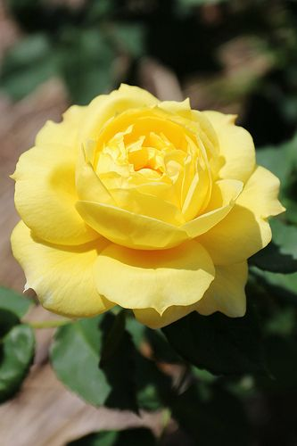
Bunga Mawar kuning merupakan ekspresi kegembiraan. Mawar kuning cerah membangkitkan perasaan sukacita, kehangatan dan persahabatan. Mawar kuning adalah simbol persahabatan dan kepedulian. Mawar kuning juga diberikan kepada sahabat-sahabat yang telah sukses melakukan sesuatu, entah itu di dunia bisnis atau prestasi kerja sebagai perlambang kejayaan.
Bunga Mawar Orange
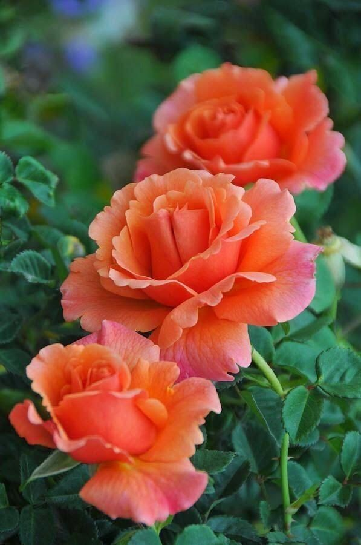
Warna oranye pada dasarnya paduan dari warna merah dan kuning yang memiliki arti antusiasme. Bunga mawar oranye adalah simbol dari semangatnya seseorang, kehangatan cinta seseorang dan yang menerimanya.
Bunga Mawar Ungu
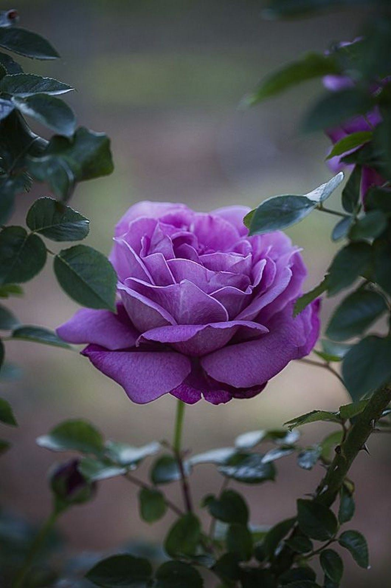
Warna mawar ini menyiratkan keindahan pesona, daya tarik, kemewahan dan keagungan. Warna ungu memiliki hubungan erat dengan royalti atau kebangsawanan. Dalam hal ini, nuansa mawar lavender menunjukkan aura keagungan agung dan kemegahan. Mawar warna ungu juga sering dipakai untuk mengekspresikan cinta terpendam (pemuja rahasia).
Bunga Tulip
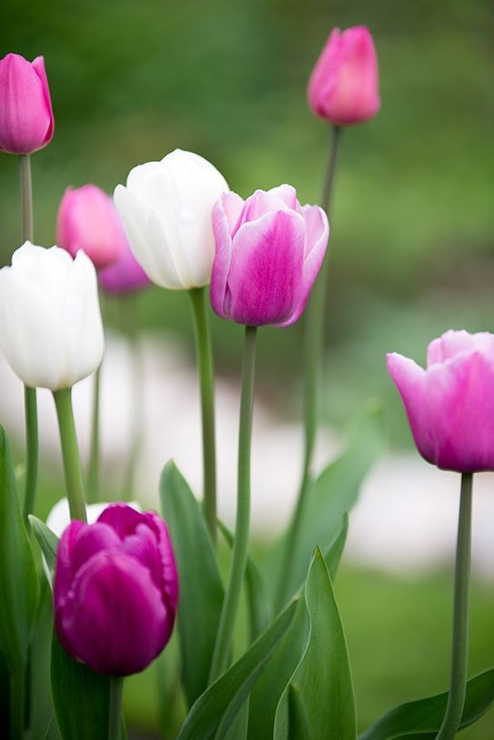
Bunga tulip melambangkan permohonan maaf, pernyataan cinta, kepedulian, kemewahan, semangat tinggi, dan persahabatan. Tetapi secara umum, bunga tulip melambangkan cinta yang sempurna. Jika warnanya bermacam-macam, bunga tulip memiliki makna keindahan cinta yang tidak bisa diungkapkan dengan kata-kata.
Bunga Peony
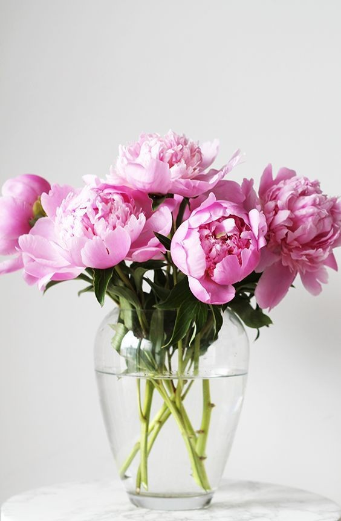
Peony mewakili karakter berkelas dan natural. Bunga ini juga melambangkan keberuntungan, dan dikenal sebagai bunga kemakmuran dan kehormatan. Peony juga terkadang dikaitkan dengan pengundang jodoh dan keabadian pernikahan.
Bunga Krisan
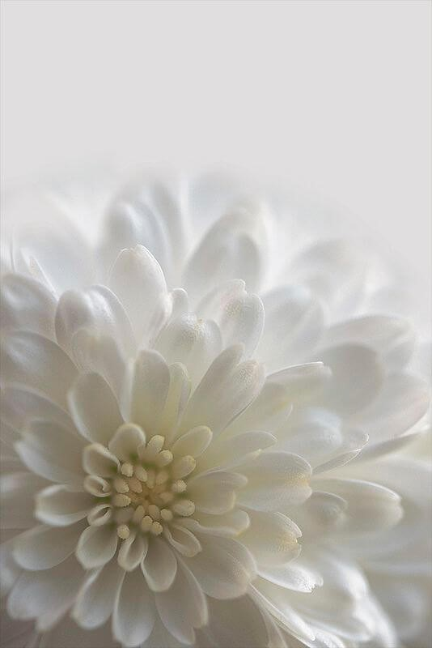
Bunga seruni atau yang mungkin lebih akrab di telinga sebagai bunga krisan memiliki arti yang berbeda-beda satu sama lain, tergantung dari warnanya.
Putih - kejujuran, kebenaran, setia
Kuning - cinta yang bertepuk sebelah tangan, cinta yang harus diwaspadai
Ungu - keinginan yang kuat untuk memiliki tubuh sehat
Merah - rasa cinta
Bunga Gerbera
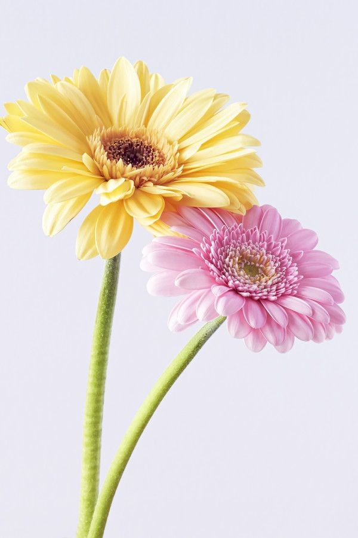
Bunga ini melambangkan cinta yang sudah lama terikat, cocok diberikan kepada pasangan saat hubungan kalian sudah berlangsung lama atau kalian punya keinginan untuk menikah. Bunga gerbera juga melambangkan kesetiaan kepada pasangan, serta meyakinkan pasangan kamu kalau kamu akan berada di sisinya sampai maut memisahkan.
Bunga Calla-Lily
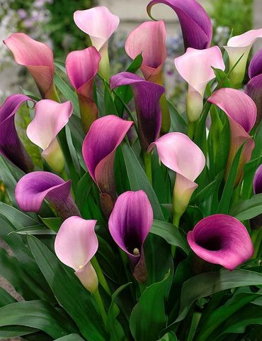
Bunga lily memiliki makna kemurnian, kesopanan, dan suci. Warna Putih - pengabdian, persahabatan, simpati, mulia, murni, suci, Merah Muda - kekayaan dan kemakmuran, Orange - kebencian, penghinaan, kesombongan, Kuning - kebohongan, kepalsuan, keriangan
Bunga Matahari
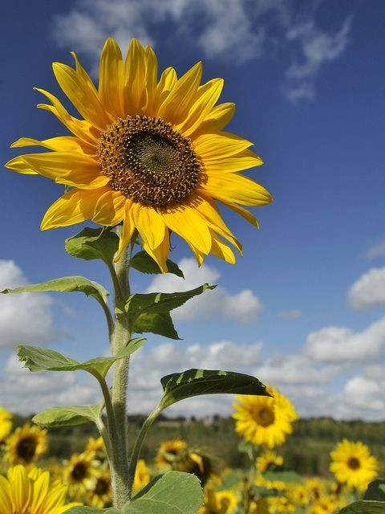
Bunga berwarna kuning ini cantik menyerupai matahari. Bunga ini diberi nama bunga matahari karena selalu menghadap ke arah matahari. Itulah yang membuat bunga matahari diartikan sebagai simbol ketulusan dan kesetiaan. Kalau kamu ingin menunjukkan ketulusan dan kesetiaanmu kepada pasangan.
Bunga Baby’s Breath
Memiliki waktu mekar yang sangat panjang yaitu yang berlangsung dari awal musim panas ke musim gugur awal di kebanyakan daerah. Bunga ini memiliki dua jenis warna yaitu putih dan pink. Baby bearth melambangkan cinta sejati tak berakhir. Bunga yang cantik dengan filosofi yang bagus.